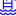

<!doctype html>
<html lang="en">
    <head>
        <meta charset="utf-8">
        <meta http-equiv="X-UA-Compatible" content="IE=edge">
        <meta name="viewport" content="initial-scale=1,user-scalable=no,maximum-scale=1,width=device-width">
        <meta name="mobile-web-app-capable" content="yes">
        <meta name="apple-mobile-web-app-capable" content="yes">
        <link rel="stylesheet" href="css/leaflet.css">
        <link rel="stylesheet" href="css/L.Control.Layers.Tree.css">
        <link rel="stylesheet" href="css/L.Control.Locate.min.css">
        <link rel="stylesheet" href="css/qgis2web.css">
        <link rel="stylesheet" href="css/fontawesome-all.min.css">
        <link rel="stylesheet" href="css/MarkerCluster.css">
        <link rel="stylesheet" href="css/MarkerCluster.Default.css">
        <link rel="stylesheet" href="css/leaflet-control-geocoder.Geocoder.css">
        <link rel="stylesheet" href="css/leaflet-measure.css">
        <style>
        html, body, #map {
            width: 100%;
            height: 100%;
            padding: 0;
            margin: 0;
        }
        </style>
        <title>Charente-Maritime</title>
    </head>
    <body>
        <div id="map">
        </div>
        <script src="js/qgis2web_expressions.js"></script>
        <script src="js/leaflet.js"></script>
        <script src="js/L.Control.Layers.Tree.min.js"></script>
        <script src="js/L.Control.Locate.min.js"></script>
        <script src="js/leaflet.rotatedMarker.js"></script>
        <script src="js/leaflet.pattern.js"></script>
        <script src="js/leaflet-hash.js"></script>
        <script src="js/Autolinker.min.js"></script>
        <script src="js/rbush.min.js"></script>
        <script src="js/labelgun.min.js"></script>
        <script src="js/labels.js"></script>
        <script src="js/leaflet-control-geocoder.Geocoder.js"></script>
        <script src="js/leaflet-measure.js"></script>
        <script src="js/leaflet.markercluster.js"></script>
        <script src="data/Office_Tourisme_1.js"></script>
        <script src="data/Edificereligieux_2.js"></script>
        <script src="data/Chateau_3.js"></script>
        <script src="data/Site_Prhistorique_4.js"></script>
        <script src="data/Piscine_5.js"></script>
        <script>
        var highlightLayer;
        function highlightFeature(e) {
            highlightLayer = e.target;
            highlightLayer.openPopup();
        }
        var map = L.map('map', {
            zoomControl:false, maxZoom:28, minZoom:1
        }).fitBounds([[45.68307182246588,-1.243392542771235],[46.01931737110116,-0.5683370700226675]]);
        var hash = new L.Hash(map);
        map.attributionControl.setPrefix('<a href="https://github.com/tomchadwin/qgis2web" target="_blank">qgis2web</a> &middot; <a href="https://leafletjs.com" title="A JS library for interactive maps">Leaflet</a> &middot; <a href="https://qgis.org">QGIS</a>');
        var autolinker = new Autolinker({truncate: {length: 30, location: 'smart'}});
        // remove popup's row if "visible-with-data"
        function removeEmptyRowsFromPopupContent(content, feature) {
         var tempDiv = document.createElement('div');
         tempDiv.innerHTML = content;
         var rows = tempDiv.querySelectorAll('tr');
         for (var i = 0; i < rows.length; i++) {
             var td = rows[i].querySelector('td.visible-with-data');
             var key = td ? td.id : '';
             if (td && td.classList.contains('visible-with-data') && feature.properties[key] == null) {
                 rows[i].parentNode.removeChild(rows[i]);
             }
         }
         return tempDiv.innerHTML;
        }
        // add class to format popup if it contains media
		function addClassToPopupIfMedia(content, popup) {
			var tempDiv = document.createElement('div');
			tempDiv.innerHTML = content;
			if (tempDiv.querySelector('td img')) {
				popup._contentNode.classList.add('media');
					// Delay to force the redraw
					setTimeout(function() {
						popup.update();
					}, 10);
			} else {
				popup._contentNode.classList.remove('media');
			}
		}
        var title = new L.Control({'position':'topright'});
        title.onAdd = function (map) {
            this._div = L.DomUtil.create('div', 'info');
            this.update();
            return this._div;
        };
        title.update = function () {
            this._div.innerHTML = '<h2>Charente-Maritime</h2>';
        };
        title.addTo(map);
        var zoomControl = L.control.zoom({
            position: 'topleft'
        }).addTo(map);
        L.control.locate({locateOptions: {maxZoom: 19}}).addTo(map);
        var measureControl = new L.Control.Measure({
            position: 'topleft',
            primaryLengthUnit: 'meters',
            secondaryLengthUnit: 'kilometers',
            primaryAreaUnit: 'sqmeters',
            secondaryAreaUnit: 'hectares'
        });
        measureControl.addTo(map);
        document.getElementsByClassName('leaflet-control-measure-toggle')[0].innerHTML = '';
        document.getElementsByClassName('leaflet-control-measure-toggle')[0].className += ' fas fa-ruler';
        var bounds_group = new L.featureGroup([]);
        function setBounds() {
        }
        map.createPane('pane_OSMStandard_0');
        map.getPane('pane_OSMStandard_0').style.zIndex = 400;
        var layer_OSMStandard_0 = L.tileLayer('http://tile.openstreetmap.org/{z}/{x}/{y}.png', {
            pane: 'pane_OSMStandard_0',
            opacity: 1.0,
            attribution: '<a href="https://www.openstreetmap.org/copyright">© OpenStreetMap contributors, CC-BY-SA</a>',
            minZoom: 1,
            maxZoom: 28,
            minNativeZoom: 0,
            maxNativeZoom: 19
        });
        layer_OSMStandard_0;
        map.addLayer(layer_OSMStandard_0);
        function pop_Office_Tourisme_1(feature, layer) {
            layer.on({
                mouseout: function(e) {
                    if (typeof layer.closePopup == 'function') {
                        layer.closePopup();
                    } else {
                        layer.eachLayer(function(feature){
                            feature.closePopup()
                        });
                    }
                },
                mouseover: highlightFeature,
            });
            var popupContent = '<table>\
                </table>';
            var content = removeEmptyRowsFromPopupContent(popupContent, feature);
			layer.on('popupopen', function(e) {
				addClassToPopupIfMedia(content, e.popup);
			});
			layer.bindPopup(content, { maxHeight: 400 });
        }

        function style_Office_Tourisme_1_0() {
            return {
                pane: 'pane_Office_Tourisme_1',
                radius: 4.0,
                opacity: 1,
                color: 'rgba(35,35,35,1.0)',
                dashArray: '',
                lineCap: 'butt',
                lineJoin: 'miter',
                weight: 1.0,
                fill: true,
                fillOpacity: 1,
                fillColor: 'rgba(252,0,0,1.0)',
                interactive: true,
            }
        }
        map.createPane('pane_Office_Tourisme_1');
        map.getPane('pane_Office_Tourisme_1').style.zIndex = 401;
        map.getPane('pane_Office_Tourisme_1').style['mix-blend-mode'] = 'normal';
        var layer_Office_Tourisme_1 = new L.geoJson(json_Office_Tourisme_1, {
            attribution: '',
            interactive: true,
            dataVar: 'json_Office_Tourisme_1',
            layerName: 'layer_Office_Tourisme_1',
            pane: 'pane_Office_Tourisme_1',
            onEachFeature: pop_Office_Tourisme_1,
            pointToLayer: function (feature, latlng) {
                var context = {
                    feature: feature,
                    variables: {}
                };
                return L.circleMarker(latlng, style_Office_Tourisme_1_0(feature));
            },
        });
        var cluster_Office_Tourisme_1 = new L.MarkerClusterGroup({showCoverageOnHover: false,
            spiderfyDistanceMultiplier: 2});
        cluster_Office_Tourisme_1.addLayer(layer_Office_Tourisme_1);

        bounds_group.addLayer(layer_Office_Tourisme_1);
        cluster_Office_Tourisme_1.addTo(map);
        function pop_Edificereligieux_2(feature, layer) {
            layer.on({
                mouseout: function(e) {
                    if (typeof layer.closePopup == 'function') {
                        layer.closePopup();
                    } else {
                        layer.eachLayer(function(feature){
                            feature.closePopup()
                        });
                    }
                },
                mouseover: highlightFeature,
            });
            var popupContent = '<table>\
                    <tr>\
                        <td colspan="2">' + (feature.properties['Nom'] !== null ? autolinker.link(String(feature.properties['Nom']).replace(/'/g, '\'').replace(/"/g, '&quot;').toLocaleString()) : '') + '</td>\
                    </tr>\
                    <tr>\
                        <td colspan="2">' + (feature.properties['Lien'] !== null ? autolinker.link(String(feature.properties['Lien']).replace(/'/g, '\'').replace(/"/g, '&quot;').toLocaleString()) : '') + '</td>\
                    </tr>\
                </table>';
            var content = removeEmptyRowsFromPopupContent(popupContent, feature);
			layer.on('popupopen', function(e) {
				addClassToPopupIfMedia(content, e.popup);
			});
			layer.bindPopup(content, { maxHeight: 400 });
        }

        function style_Edificereligieux_2_0() {
            return {
                pane: 'pane_Edificereligieux_2',
        rotationAngle: 0.0,
        rotationOrigin: 'center center',
        icon: L.icon({
            iconUrl: 'markers/Edificereligieux_2.svg',
            iconSize: [26.599999999999998, 26.599999999999998]
        }),
                interactive: true,
            }
        }
        map.createPane('pane_Edificereligieux_2');
        map.getPane('pane_Edificereligieux_2').style.zIndex = 402;
        map.getPane('pane_Edificereligieux_2').style['mix-blend-mode'] = 'normal';
        var layer_Edificereligieux_2 = new L.geoJson(json_Edificereligieux_2, {
            attribution: '',
            interactive: true,
            dataVar: 'json_Edificereligieux_2',
            layerName: 'layer_Edificereligieux_2',
            pane: 'pane_Edificereligieux_2',
            onEachFeature: pop_Edificereligieux_2,
            pointToLayer: function (feature, latlng) {
                var context = {
                    feature: feature,
                    variables: {}
                };
                return L.marker(latlng, style_Edificereligieux_2_0(feature));
            },
        });
        var cluster_Edificereligieux_2 = new L.MarkerClusterGroup({showCoverageOnHover: false,
            spiderfyDistanceMultiplier: 2});
        cluster_Edificereligieux_2.addLayer(layer_Edificereligieux_2);

        bounds_group.addLayer(layer_Edificereligieux_2);
        cluster_Edificereligieux_2.addTo(map);
        function pop_Chateau_3(feature, layer) {
            layer.on({
                mouseout: function(e) {
                    if (typeof layer.closePopup == 'function') {
                        layer.closePopup();
                    } else {
                        layer.eachLayer(function(feature){
                            feature.closePopup()
                        });
                    }
                },
                mouseover: highlightFeature,
            });
            var popupContent = '<table>\
                    <tr>\
                        <td colspan="2">' + (feature.properties['Nom'] !== null ? autolinker.link(String(feature.properties['Nom']).replace(/'/g, '\'').replace(/"/g, '&quot;').toLocaleString()) : '') + '</td>\
                    </tr>\
                    <tr>\
                        <td colspan="2">' + (feature.properties['Lien'] !== null ? autolinker.link(String(feature.properties['Lien']).replace(/'/g, '\'').replace(/"/g, '&quot;').toLocaleString()) : '') + '</td>\
                    </tr>\
                </table>';
            var content = removeEmptyRowsFromPopupContent(popupContent, feature);
			layer.on('popupopen', function(e) {
				addClassToPopupIfMedia(content, e.popup);
			});
			layer.bindPopup(content, { maxHeight: 400 });
        }

        function style_Chateau_3_0() {
            return {
                pane: 'pane_Chateau_3',
        rotationAngle: 0.0,
        rotationOrigin: 'center center',
        icon: L.icon({
            iconUrl: 'markers/Chateau_3.svg',
            iconSize: [26.599999999999998, 26.599999999999998]
        }),
                interactive: true,
            }
        }
        map.createPane('pane_Chateau_3');
        map.getPane('pane_Chateau_3').style.zIndex = 403;
        map.getPane('pane_Chateau_3').style['mix-blend-mode'] = 'normal';
        var layer_Chateau_3 = new L.geoJson(json_Chateau_3, {
            attribution: '',
            interactive: true,
            dataVar: 'json_Chateau_3',
            layerName: 'layer_Chateau_3',
            pane: 'pane_Chateau_3',
            onEachFeature: pop_Chateau_3,
            pointToLayer: function (feature, latlng) {
                var context = {
                    feature: feature,
                    variables: {}
                };
                return L.marker(latlng, style_Chateau_3_0(feature));
            },
        });
        var cluster_Chateau_3 = new L.MarkerClusterGroup({showCoverageOnHover: false,
            spiderfyDistanceMultiplier: 2});
        cluster_Chateau_3.addLayer(layer_Chateau_3);

        bounds_group.addLayer(layer_Chateau_3);
        cluster_Chateau_3.addTo(map);
        function pop_Site_Prhistorique_4(feature, layer) {
            layer.on({
                mouseout: function(e) {
                    if (typeof layer.closePopup == 'function') {
                        layer.closePopup();
                    } else {
                        layer.eachLayer(function(feature){
                            feature.closePopup()
                        });
                    }
                },
                mouseover: highlightFeature,
            });
            var popupContent = '<table>\
                    <tr>\
                        <td colspan="2">' + (feature.properties['Nom'] !== null ? autolinker.link(String(feature.properties['Nom']).replace(/'/g, '\'').replace(/"/g, '&quot;').toLocaleString()) : '') + '</td>\
                    </tr>\
                    <tr>\
                        <td colspan="2">' + (feature.properties['Lien'] !== null ? autolinker.link(String(feature.properties['Lien']).replace(/'/g, '\'').replace(/"/g, '&quot;').toLocaleString()) : '') + '</td>\
                    </tr>\
                </table>';
            var content = removeEmptyRowsFromPopupContent(popupContent, feature);
			layer.on('popupopen', function(e) {
				addClassToPopupIfMedia(content, e.popup);
			});
			layer.bindPopup(content, { maxHeight: 400 });
        }

        function style_Site_Prhistorique_4_0() {
            return {
                pane: 'pane_Site_Prhistorique_4',
        rotationAngle: 0.0,
        rotationOrigin: 'center center',
        icon: L.icon({
            iconUrl: 'markers/Site_Prhistorique_4.svg',
            iconSize: [19.0, 19.0]
        }),
                interactive: true,
            }
        }
        map.createPane('pane_Site_Prhistorique_4');
        map.getPane('pane_Site_Prhistorique_4').style.zIndex = 404;
        map.getPane('pane_Site_Prhistorique_4').style['mix-blend-mode'] = 'normal';
        var layer_Site_Prhistorique_4 = new L.geoJson(json_Site_Prhistorique_4, {
            attribution: '',
            interactive: true,
            dataVar: 'json_Site_Prhistorique_4',
            layerName: 'layer_Site_Prhistorique_4',
            pane: 'pane_Site_Prhistorique_4',
            onEachFeature: pop_Site_Prhistorique_4,
            pointToLayer: function (feature, latlng) {
                var context = {
                    feature: feature,
                    variables: {}
                };
                return L.marker(latlng, style_Site_Prhistorique_4_0(feature));
            },
        });
        var cluster_Site_Prhistorique_4 = new L.MarkerClusterGroup({showCoverageOnHover: false,
            spiderfyDistanceMultiplier: 2});
        cluster_Site_Prhistorique_4.addLayer(layer_Site_Prhistorique_4);

        bounds_group.addLayer(layer_Site_Prhistorique_4);
        cluster_Site_Prhistorique_4.addTo(map);
        function pop_Piscine_5(feature, layer) {
            layer.on({
                mouseout: function(e) {
                    if (typeof layer.closePopup == 'function') {
                        layer.closePopup();
                    } else {
                        layer.eachLayer(function(feature){
                            feature.closePopup()
                        });
                    }
                },
                mouseover: highlightFeature,
            });
            var popupContent = '<table>\
                </table>';
            var content = removeEmptyRowsFromPopupContent(popupContent, feature);
			layer.on('popupopen', function(e) {
				addClassToPopupIfMedia(content, e.popup);
			});
			layer.bindPopup(content, { maxHeight: 400 });
        }

        function style_Piscine_5_0() {
            return {
                pane: 'pane_Piscine_5',
                radius: 4.0,
                opacity: 1,
                color: 'rgba(35,35,35,1.0)',
                dashArray: '',
                lineCap: 'butt',
                lineJoin: 'miter',
                weight: 1.0,
                fill: true,
                fillOpacity: 1,
                fillColor: 'rgba(7,148,243,1.0)',
                interactive: true,
            }
        }
        map.createPane('pane_Piscine_5');
        map.getPane('pane_Piscine_5').style.zIndex = 405;
        map.getPane('pane_Piscine_5').style['mix-blend-mode'] = 'normal';
        var layer_Piscine_5 = new L.geoJson(json_Piscine_5, {
            attribution: '',
            interactive: true,
            dataVar: 'json_Piscine_5',
            layerName: 'layer_Piscine_5',
            pane: 'pane_Piscine_5',
            onEachFeature: pop_Piscine_5,
            pointToLayer: function (feature, latlng) {
                var context = {
                    feature: feature,
                    variables: {}
                };
                return L.circleMarker(latlng, style_Piscine_5_0(feature));
            },
        });
        var cluster_Piscine_5 = new L.MarkerClusterGroup({showCoverageOnHover: false,
            spiderfyDistanceMultiplier: 2});
        cluster_Piscine_5.addLayer(layer_Piscine_5);

        bounds_group.addLayer(layer_Piscine_5);
        cluster_Piscine_5.addTo(map);
        var osmGeocoder = new L.Control.Geocoder({
            collapsed: true,
            position: 'topleft',
            text: 'Search',
            title: 'Testing'
        }).addTo(map);
        document.getElementsByClassName('leaflet-control-geocoder-icon')[0]
        .className += ' fa fa-search';
        document.getElementsByClassName('leaflet-control-geocoder-icon')[0]
        .title += 'Search for a place';
        var overlaysTree = [
            {label: ' Piscine', layer: cluster_Piscine_5},
            {label: ' Site_Préhistorique', layer: cluster_Site_Prhistorique_4},
            {label: ' Chateau', layer: cluster_Chateau_3},
            {label: ' Edifice religieux', layer: cluster_Edificereligieux_2},
            {label: ' Office_Tourisme', layer: cluster_Office_Tourisme_1},
            {label: "OSM Standard", layer: layer_OSMStandard_0},]
        var lay = L.control.layers.tree(null, overlaysTree,{
            //namedToggle: true,
            //selectorBack: false,
            //closedSymbol: '&#8862; &#x1f5c0;',
            //openedSymbol: '&#8863; &#x1f5c1;',
            //collapseAll: 'Collapse all',
            //expandAll: 'Expand all',
            collapsed: true,
        });
        lay.addTo(map);
        setBounds();
        </script>
    </body>
</html>
